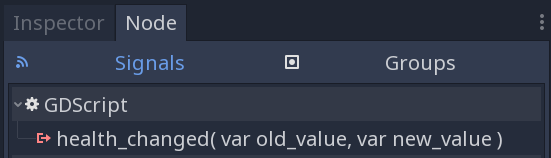

Bases de GDScript¶
Introduction¶
GDScript est un langage de haut niveau à typage dynamique utilisé pour créer du contenu. Il utilise une syntaxe similaire au langage Python (les blocs sont identifiés par l'indentation et une grande partie des mots clés sont similaires). Son but est d’être optimisé et étroitement intégré avec le moteur ValjangEngine, cela permettant une grande flexibilité pour la création et l’intégration de contenu.
Histoire¶
Note
La documentation sur l'histoire de GDScript a été déplacée dans Questions fréquentes.
Exemple de GDScript¶
Certaines personnes apprennent plus facilement en regardant la syntaxe. Voici donc un exemple de ce à quoi ressemble GDScript.
# A file is a class!
# Inheritance
extends BaseClass
# (optional) class definition with a custom icon
class_name MyClass, "res://path/to/optional/icon.svg"
# Member variables
var a = 5
var s = "Hello"
var arr = [1, 2, 3]
var dict = {"key": "value", 2: 3}
var typed_var: int
var inferred_type := "String"
# Constants
const ANSWER = 42
const THE_NAME = "Charly"
# Enums
enum {UNIT_NEUTRAL, UNIT_ENEMY, UNIT_ALLY}
enum Named {THING_1, THING_2, ANOTHER_THING = -1}
# Built-in vector types
var v2 = Vector2(1, 2)
var v3 = Vector3(1, 2, 3)
# Function
func some_function(param1, param2):
var local_var = 5
if param1 < local_var:
print(param1)
elif param2 > 5:
print(param2)
else:
print("Fail!")
for i in range(20):
print(i)
while param2 != 0:
param2 -= 1
var local_var2 = param1 + 3
return local_var2
# Functions override functions with the same name on the base/parent class.
# If you still want to call them, use '.' (like 'super' in other languages).
func something(p1, p2):
.something(p1, p2)
# Inner class
class Something:
var a = 10
# Constructor
func _init():
print("Constructed!")
var lv = Something.new()
print(lv.a)
Si vous avez déjà de l’expérience avec des langages à typage statique tels que C, C++ ou C# mais que vous n'avez jamais utilisé un langage à typage dynamique, il vous est conseillé de lire ce tutoriel : GDScript : Une introduction aux langages dynamiques.
Langage¶
Ce qui suit est un aperçu de GDScript. Les détails tels que les méthodes disponibles pour les tableaux ou autres objets peuvent être consultés dans les liens vers les descriptions des classes.
Identifiants¶
Toute chaîne de caractère limitée aux caractères alphabétiques (a à z et A à Z), aux chiffres (0 à 9) et _ est un identifiant potentiel. Les identifiants ne doivent également pas commencer par un chiffre. Les identifiants sont sensibles à la casse. (toto est différent de TOTO).
Mots-clés¶
Ce qui suit est une liste de mots-clés supportés par le langage. Étant donné que les mots-clés sont des mots (symboles) réservés, il ne peuvent êtres utilisés comme identifiants. Les opérateurs (comme in, not, and ou or) et les noms des types intégrés énumérés dans les sections suivantes sont également réservés.
Les mots-clés sont définis dans le GDScript tokenizer si vous souhaitez regarder sous le capot.
| Mot-clé | Description |
|---|---|
| if | Voir if/else/elif. |
| elif | Voir if/else/elif. |
| else | Voir if/else/elif. |
| for | Voir for. |
| while | Voir while. |
| match | Voir match. |
| break | Quitte l'exécution de la boucle for ou while courante. |
| continue | Passe immédiatement à l'itération suivante de la boucle for ou while. |
| pass | Utilisé lorsqu'une instruction est requise syntaxiquement mais ou l’exécution de code est indésirable, comme par exemple, dans une fonction vide. |
| return | Retourne une valeur à partir d'une fonction. |
| class | Définit une classe. |
| extends | Définit quelle classe étendre avec la classe courante. |
| is | Teste si une variable est du type d'une classe donnée, ou si elle est d'un type intégré donnée. |
| as | Convertir la valeur vers un type donné, si possible. |
| self | Réfère à l'instance courante de la classe. |
| tool | Exécute le script dans l'éditeur. |
| signal | Définit un signal. |
| func | Définit une fonction. |
| static | Définit une fonction statique. Les variables membres statiques ne sont pas autorisés. |
| const | Définit une constante. |
| enum | Définit une énumération. |
| var | Définit une variable. |
| onready | Initialise une variable une fois que le nœud auquel le script est attaché, ainsi que ses enfants, font partie de l'arborescence de la scène. |
| export | Sauvegarde une variable ainsi que la ressource qui lui est attachée et la rend visible et modifiable via l'éditeur. |
| setget | Définit les accesseurs (setter) et mutateurs (getter) pour une variable. |
| breakpoint | Assistant de l'éditeur de points d'arrêt du débogueur. |
| preload | Précharge une classe ou une variable. Voir Classes as resources. |
| yield | Support de coroutine. Voir Coroutines with yield. |
| assert | Affirmer une condition, journalise les erreurs en cas d'échec. Ignorer dans les compilations autre que de débogages. Voir Assert keyword. |
| remote | Annotation de réseautage RPC. Voir high-level multiplayer docs. |
| master | Annotation de réseautage RPC. Voir high-level multiplayer docs. |
| puppet | Annotation de réseautage RPC. Voir high-level multiplayer docs. |
| remotesync | Annotation de réseautage RPC. Voir high-level multiplayer docs. |
| mastersync | Annotation de réseautage RPC. Voir high-level multiplayer docs. |
| puppetsync | Annotation de réseautage RPC. Voir high-level multiplayer docs. |
| PI | Constante PI. |
| TAU | Constante TAU. |
| INF | Constante de l'infinité. Elle est utilisée pour les comparaisons. |
| NAN | La constante NAN (n'est pas un nombre). Elle est utilisée pour les comparaisons. |
Opérateurs¶
Ce qui suit est la liste des opérateurs supportés et leur priorité.
| Opérateur | Description |
x[index] |
Abonnement (priorité la plus élevée) |
x.attribut |
Référence d'attribut |
foo() |
Appel de fonction |
is |
Vérificateur de type d'instance |
~ |
Opération bit-à-bit de négation |
-x |
Négation / négation unaire |
* / % |
Multiplication / Division / Reste Ces opérateurs ont le même comportement qu'en C++. La division d'entiers est tronquée plutôt que de retourner un nombre fractionnaire, et l'opérateur % n'est disponible que pour les ints ("fmod" pour les floats) |
+ |
Ajout / Concaténation de tableaux |
- |
Soustraction |
<< >> |
Décalage de bits |
& |
Conjonction logique bit-à-bit |
^ |
Opération "Ou" exclusif bit-à-bit |
| |
Disjonction logique bit-à-bit |
< > == != >= <= |
Comparaisons |
in |
Test de contenu |
! not |
NOT booléen |
and && |
AND booléenooléen |
or || |
OR booléen |
if x else |
if / else ternaire |
as |
La conversion de type |
= += -= *= /= %= &= |= |
Affectation (priorité la plus basse) |
Littéraux¶
| Littéraux | Type |
45 |
Entier en base 10 (décimal) |
0x8F51 |
Entier base 16 (hexadécimal) |
0b101010 |
Entier base 2 (binaire) |
3.14, 58.1e-10 |
Nombre à virgule flottante (réel) |
"Bonjour", "Salut" |
Chaînes de caractères |
"""Bonjour""" |
Chaîne de caractères multiligne |
@"Node/Label" |
NodePath ou StringName |
$NodePath |
Sténographie pour get_node("NodePath") |
Commentaire¶
Tout ce qui est écrit depuis un # jusqu'à la fin de la ligne est ignoré et est considéré comme un commentaire.
# This is a comment.
Types intégrés¶
Les types intégrés sont alloués sur la pile. Ils sont transmis comme valeurs. Cela signifie qu'une copie est créée à chaque affectation ou quand elles sont passées comme arguments aux fonctions. Les seules exceptions sont les Arrays et Dictionaries, qui sont passés par référence de sorte qu'ils sont partagés. (PoolArray comme PoolByteArray sont passés par valeurs.)
Types intégrés basiques¶
Une variable en GDScript peut être affectée à divers types intégrés.
null¶
null est une donnée vide qui ne contient aucune information et à laquelle aucune autre valeur ne peut être affectée.
int¶
De l'anglais "integer", contient des nombres entiers (positifs et négatifs). Ceux-ci sont stockés comme des valeurs 64-bits, équivalent à "int64_t" en C++.
float¶
Contient un nombre réel (avec décimales), en tant que valeur à virgule flottante. Celui-ci est stocké comme valeur 64 bits, équivalent à "double" en C++. Note : Actuellement, les structures de données comme Vector2, Vector3 et PoolRealArray stockent des valeurs 32 bits à virgules flottantes de précision unique.
String¶
Une séquence de caractères au format Unicode <https://en.wikipedia.org/wiki/Unicode>. Les chaînes de caractère peuvent contenir les séquences d'échappement suivante :
| Séquence d'échappement | S’étend à |
\n |
Nouvelle ligne (line feed) |
\t |
Caractère de tabulation horizontale |
\r |
Retour chariot |
\a |
Alerte (bip/cloche) |
\b |
Retour en arrière |
\f |
Saut de page Formfeed |
\v |
Caractère de tabulation verticale |
\" |
Guillemet |
\' |
Citation unique |
\\ |
Antislash |
\uXXXX |
Point de code Unicode XXXX (hexadécimal, non sensible à la casse) |
GDScript prend également en charge Chaînes de format GDScript.
Types intégrés vectoriels¶
Vector2¶
Type de vecteur 2D contenant les attributs x and y. Peut aussi être accédé comme pour un tableau.
Rect2¶
Type de rectangle 2D contenant deux champs de vecteurs : position et size. Contient également un champ end qui est position + taille.
Vector3¶
Type de vecteur 3D contenant les attributs x, y et z. Il peut également être accédé comme un tableau.
Transform2D¶
Matrice 3x2 utilisée pour les transformations 2D.
Quat¶
Un quaternion est un type de données utilisé pour représenter une rotation 3D. Cette représentation est utile pour l'interpolation de rotations.
AABB¶
La boite englobante (ou 3D box) alignée par axe contient 2 champs de vecteurs : position et size. Contient également un champ end qui est position + size.
Types intégrés dans le moteur¶
Color¶
Le type de données Color contient les attributs r, g, b, et a. Il peut aussi être accédé par h, s, et v pour la teinte(hue)/saturation/valeur.
NodePath¶
Chemin vers un nœud utilisé principalement dans le système de scène. Il peut facilement être assigné vers ou à partir d'une chaîne de caractère.
Types de conteneurs intégrés¶
Array¶
Séquence générique de types d'objets arbitraires. Sont inclus d'autres tableaux ou dictionnaires (voir ci-dessous). Le tableau peut être redimensionné dynamiquement. Les tableaux sont indexés en commençant par l'index 0. Les indices négatifs comptent à partir de la fin.
var arr = []
arr = [1, 2, 3]
var b = arr[1] # This is 2.
var c = arr[arr.size() - 1] # This is 3.
var d = arr[-1] # Same as the previous line, but shorter.
arr[0] = "Hi!" # Replacing value 1 with "Hi!".
arr.append(4) # Array is now ["Hi!", 2, 3, 4].
Les tableaux GDScript sont alloués en mémoire de façon linéaire pour les performances. Les tableaux de très grosse taille (plus d'une dizaine de milliers d’éléments) peuvent cependant provoquer une fragmentation de la mémoire. S'il s'agit d'un problème à considérer, des types de tableaux spéciaux sont disponibles. Ceux-ci n'acceptent qu'un seul type de données. Ils permettent d’éviter une fragmentation de la mémoire, utilisent moins de mémoire, mais sont atomiques et ont tendance à être moins performants que les tableaux génériques. Leur usage n'est donc recommandé que pour de très larges ensembles de données :
- PoolByteArray : Un tableau d'octets (entiers de 0 à 255).
- PoolIntArray : Un tableau d'entiers.
- PoolRealArray : Un tableau de nombres flottants.
- PoolStringArray : Un tableau de chaînes de caractères.
- PoolVector2Array : Un tableau d'objets Vector2.
- PoolVector3Array : Un tableau d'objets Vector3.
- PoolColorArray : Un tableau d'objets Color.
Dictionary¶
Conteneur associatif qui contient des valeurs référencées par des clés uniques.
var d = {4: 5, "A key": "A value", 28: [1, 2, 3]}
d["Hi!"] = 0
d = {
22: "value",
"some_key": 2,
"other_key": [2, 3, 4],
"more_key": "Hello"
}
Les tables en style Lua sont également supportés. Le style Lua utilise = au lieu de : et n'utilise pas de guillemets pour marquer les clés de chaîne de caractères (ce qui réduit légèrement l'écriture). Notez cependant que comme tout identificateur GDScript, les clés écrites dans cette forme ne peuvent pas commencer par un chiffre.
var d = {
test22 = "value",
some_key = 2,
other_key = [2, 3, 4],
more_key = "Hello"
}
Pour ajouter une clé à un dictionnaire existant, accédez-y comme une clé existante et affectez lui une valeur :
var d = {} # Create an empty Dictionary.
d.waiting = 14 # Add String "waiting" as a key and assign the value 14 to it.
d[4] = "hello" # Add integer 4 as a key and assign the String "hello" as its value.
d["ValjangEngine"] = 3.01 # Add String "ValjangEngine" as a key and assign the value 3.01 to it.
var test = 4
# Prints "hello" by indexing the dictionary with a dynamic key.
# This is not the same as `d.test`. The bracket syntax equivalent to
# `d.test` is `d["test"]`.
print(d[test])
Note
La syntaxe des crochets peut être utilisée pour accéder aux propriétés de n'importe quel Object, et pas seulement aux Dictionnaires. N'oubliez pas qu'elle provoquera une erreur de script lorsque vous tenterez d'indexer une propriété inexistante. Pour éviter cela, utilisez les méthodes Object.get() et Object.set() à la place.
Données¶
Variables¶
Les variables peuvent exister en tant que membres de la classe ou locales aux fonctions. Elles sont créées avec le mot-clé var et peuvent, éventuellement, se voir attribuer une valeur à l'initialisation.
var a # Data type is 'null' by default.
var b = 5
var c = 3.8
var d = b + c # Variables are always initialized in order.
Les variables peuvent optionnellement avoir une spécification de type. Lorsqu'un type est spécifié, la variable sera obligée d'avoir toujours le même type, et essayer d'assigner une valeur incompatible entraînera une erreur.
Les types sont spécifiés dans la variable par un : après le nom de la variable, suivi par le type.
var my_vector2: Vector2
var my_node: Node = Sprite.new()
Si la variable est initialisée dans la déclaration, le type peut être déduit, il est donc possible de ne pas mettre le nom du type :
var my_vector2 := Vector2() # 'my_vector2' is of type 'Vector2'.
var my_node := Sprite.new() # 'my_node' is of type 'Sprite'.
L'inférence de type n'est possible que si la valeur affectée a un type défini, sinon une erreur sera générée.
Les types valides sont :
- Types intégrés (Array, Vector2, int, String, etc.).
- Classes du moteur (Node, Resource, Reference, etc.).
- Les noms des constantes s'ils contiennent un script ressource (
MyScriptsi vous avez déclaréconst MyScript = preload("res://my_script.gd")). - D'autres classes dans le même script, respectant la portée (
InnerClass.NestedClasssi vous avez déclaréclass NestedClassà l'intérieur declass InnerClassdans la même portée). - Les classes de script déclarées avec le mot-clé
class_name.
Conversion de type¶
Les valeurs affectées à des variables typées doivent avoir un type compatible. S'il est nécessaire de contraindre une valeur à être d'un certain type, surtout pour les types d'objet, vous pouvez utiliser l'opérateur de conversion as.
La conversion de types d'objets résulte en le même objet si la valeur est du même type ou d'un type enfant du type de conversion.
var my_node2D: Node2D
my_node2D = $Sprite as Node2D # Works since Sprite is a subtype of Node2D.
Si la valeur n'est pas un type enfant, l'opération de conversion se résultera en une valeur null.
var my_node2D: Node2D
my_node2D = $Button as Node2D # Results in 'null' since a Button is not a subtype of Node2D.
Pour les types intégrés, ils seront convertis de force si possible, sinon le moteur générera une erreur.
var my_int: int
my_int = "123" as int # The string can be converted to int.
my_int = Vector2() as int # A Vector2 can't be converted to int, this will cause an error.
Le casting est également utile pour avoir de meilleures variables de type-safe lors de l’interaction avec l’arbre de la scène :
# Will infer the variable to be of type Sprite.
var my_sprite := $Character as Sprite
# Will fail if $AnimPlayer is not an AnimationPlayer, even if it has the method 'play()'.
($AnimPlayer as AnimationPlayer).play("walk")
Constantes¶
Les constantes sont similaires aux variables, mais doivent être constantes ou des expressions constantes et doivent être assignées à l'initialisation.
const A = 5
const B = Vector2(20, 20)
const C = 10 + 20 # Constant expression.
const D = Vector2(20, 30).x # Constant expression: 20.
const E = [1, 2, 3, 4][0] # Constant expression: 1.
const F = sin(20) # 'sin()' can be used in constant expressions.
const G = x + 20 # Invalid; this is not a constant expression!
const H = A + 20 # Constant expression: 25 (`A` is a constant).
Même si le type des constantes est implicitement spécifié par la valeur assignée, il est également possible d'ajouter une spécification explicite du type :
const A: int = 5
const B: Vector2 = Vector2()
Assigner une valeur à un type incompatible va générer une erreur.
Note
Comme les tableaux et les dictionnaires sont passés par référence, les constantes sont "flat". Cela signifie que si vous déclarez un tableau ou un dictionnaire constant, il peut toujours être modifié par la suite. Ils ne peuvent cependant pas être réassignées avec une autre valeur.
Énumérations¶
Les énumérations sont en fait une forme abrégée pour déclarer des constantes, et sont pratiques si vous voulez assigner des entiers consécutifs à certaines constantes.
Si vous donnez un nom à l'enum, cela mettra également toutes les valeurs à l'intérieur d'un dictionnaire constant de même nom.
Important
Dans ValjangEngine 3.1 et ultérieur, les clefs dans une enum nommée ne sont pas déclarées en tant que constantes globales. Pour y accéder, elles doivent être préfixées par le nom de l'enum (Name.KEY) ; voir l'exemple ci-dessous.
enum {TILE_BRICK, TILE_FLOOR, TILE_SPIKE, TILE_TELEPORT}
# Is the same as:
const TILE_BRICK = 0
const TILE_FLOOR = 1
const TILE_SPIKE = 2
const TILE_TELEPORT = 3
enum State {STATE_IDLE, STATE_JUMP = 5, STATE_SHOOT}
# Is the same as:
const State = {STATE_IDLE = 0, STATE_JUMP = 5, STATE_SHOOT = 6}
# Access values with State.STATE_IDLE, etc.
Fonctions¶
Les fonctions appartiennent toujours à une classe. La priorité de portée pour la recherche de la variable est : locale → membre de classe → globale. La variable self est toujours disponible et est fournie comme option pour accéder aux membres de la classe, mais n'est pas toujours nécessaire (et ne devrait pas être envoyée comme premier argument de la fonction, contrairement à Python).
func my_function(a, b):
print(a)
print(b)
return a + b # Return is optional; without it 'null' is returned.
Une fonction peut return à tout moment. La valeur de retour par défaut est null.
Les fonctions peuvent également avoir une spécification de type pour les arguments et pour les valeurs retournées. Les types peuvent être ajoutés aux arguments de la même manière que pour les variables :
func my_function(a: int, b: String):
pass
Si l'argument d'une fonction a une valeur par défaut, il est possible d'inférer le type :
func my_function(int_arg := 42, String_arg := "string"):
pass
Le type de retour de la fonction peut être spécifié après la liste d'arguments en utilisant le jeton de flèche (->) :
func my_int_function() -> int:
return 0
Les fonctions qui ont un type de retour doivent retourner une valeur appropriée. Paramétrer le type d'une fonction à void signifie qu'elle ne retournera rien. Les fonctions vides peuvent retourner à l'avance en utilisant le mot-clé return, mais elles ne peuvent pas retourner de valeurs.
void_function() -> void:
return # Can't return a value
Note
Les fonctions non-vides doivent toujours retourner une valeur, donc si votre code a des instructions de branchement (comme une construction if/else), tous les chemins possibles doivent avoir un retour. Par exemple, si vous avez un return à l'intérieur d'un bloc if mais pas après, l'éditeur affichera une erreur car si le bloc n'est pas exécuté, la fonction n'aura pas de valeur valide à retourner.
Fonctions de référencement¶
Contrairement au Python, les fonctions ne sont pas des objets de première classe dans GDScript. Cela signifie qu'elles ne peuvent pas être stockées dans des variables, passées en argument à une autre fonction ou être renvoyées par d'autres fonctions. Ceci pour des raisons de performance.
Pour référencer une fonction par son nom au moment de l'exécution (par exemple pour la stocker dans une variable, ou la passer à une autre fonction en argument), il faut utiliser les aides call ou funcref :
# Call a function by name in one step.
my_node.call("my_function", args)
# Store a function reference.
var my_func = funcref(my_node, "my_function")
# Call stored function reference.
my_func.call_func(args)
Fonctions statiques¶
Une fonction peut être déclarée statique. Lorsqu'une fonction est statique, elle n'a pas accès aux variables membres de l'instance ou à self. Ceci est principalement utile pour faire des bibliothèques de fonctions d'aide :
static func sum2(a, b):
return a + b
Instructions et flux de contrôle¶
Les instructions sont standard et peuvent être des affectations, des appels de fonctions, des structure de contrôle, etc (voir ci-dessous). ; utilisé comme séparateur d'instructions est entièrement facultatif.
if/else/elif (si / sinon / sinon-si)¶
De simples conditions sont créées en utilisant la syntaxe if/else/elif. Les parenthèses autour des conditions sont autorisées, mais pas obligatoires. Étant donné la nature de l'indentation par onglets, elif peut être utilisé à la place de else/if pour maintenir le niveau d'indentation.
if [expression]:
statement(s)
elif [expression]:
statement(s)
else:
statement(s)
Les instructions courtes peuvent être écrites sur la même ligne que la condition :
if 1 + 1 == 2: return 2 + 2
else:
var x = 3 + 3
return x
Parfois, il peut être nécessaire d'affecter une valeur initiale différente, basée sur une expression booléenne. Dans ce cas, les conditions ternaires peuvent être utiles :
var x = [value] if [expression] else [value]
y += 3 if y < 10 else -1
while¶
Les boucles simples sont créées en utilisant la syntaxe while. Elles peuvent être interrompues en utilisant break ou poursuivies en utilisant continue :
while [expression]:
statement(s)
for¶
Pour itérer à travers une plage, telle qu'un tableau ou une table, une boucle for est utilisée. Lors de l'itération dans un tableau, l'élément courant du tableau est stocké dans la variable de la boucle. Lors de l'itération sur un dictionnaire, la key est stockée dans la variable de la boucle.
for x in [5, 7, 11]:
statement # Loop iterates 3 times with 'x' as 5, then 7 and finally 11.
var dict = {"a": 0, "b": 1, "c": 2}
for i in dict:
print(dict[i]) # Prints 0, then 1, then 2.
for i in range(3):
statement # Similar to [0, 1, 2] but does not allocate an array.
for i in range(1, 3):
statement # Similar to [1, 2] but does not allocate an array.
for i in range(2, 8, 2):
statement # Similar to [2, 4, 6] but does not allocate an array.
for c in "Hello":
print(c) # Iterate through all characters in a String, print every letter on new line.
for i in 3:
statement # Similar to range(3)
for i in 2.2:
statement # Similar to range(ceil(2.2))
match¶
L'instruction match est utilisée pour réaliser un branchement de l’exécution d'un programme. Elle est semblable à l'instruction switch présente en beaucoup d'autres langages mais elle procure cependant quelques fonctionnalités supplémentaires.
Syntaxe de base :
match [expression]:
[pattern](s):
[block]
[pattern](s):
[block]
[pattern](s):
[block]
Cours rapide pour ceux qui sont familiers avec les instructions switch :
- Remplacez
switchparmatch. - Supprimer
case. - Enlevez tous les
break. Si vous ne voulez pasbreakpar défaut, vous pouvez utilisercontinuepour poursuivre l’exécution dematch. - Remplacer
defaultpar un unique underscore (_).
Contrôle du flux d’exécution :
Les expressions sont comparées du haut vers le bas. Si une expression correspond, le premier bloc de code correspondant sera exécuté. Après cela, l’exécution continuera après le bloc d'instructions match. Vous pouvez utiliser continue pour arrêter l'exécution dans le bloc en cours et vérifier une correspondance supplémentaire dans les expressions en dessous de celui-ci.
Il y a 6 types d'expressions :
- Modèle constant
Les constantes primitives, telles que les nombres et les chaînes de caractères :
match x: 1: print("We are number one!") 2: print("Two are better than one!") "test": print("Oh snap! It's a string!")
- Modèle variable
Correspond au contenu d'une variable/énumération :
match typeof(x): TYPE_REAL: print("float") TYPE_STRING: print("text") TYPE_ARRAY: print("array")
- Motif générique (joker/wildcard)
Cette expression correspond à toute possibilité. Elle est écrite sous la forme d'un simple underscore (_).
Elle peut être utilisée comme l’équivalent de
defaultde l'expressionswitchdans d'autres langages :match x: 1: print("It's one!") 2: print("It's one times two!") _: print("It's not 1 or 2. I don't care to be honest.")
- Expression de liaison
Une expression de liaison introduit une nouvelle variable. Comme le caractère joker (wildcard), elle correspond à toutes les possibilités - et donne aussi un nom à cette valeur. Elle est particulièrement utile avec les tableaux et les dictionnaires :
match x: 1: print("It's one!") 2: print("It's one times two!") var new_var: print("It's not 1 or 2, it's ", new_var)
- Modèle de tableau
Elle correspond à un tableau. Chaque élément du modèle de tableau est un modèle lui-même, de sorte que vous pouvez les imbriquer.
La longueur du tableau est d'abord testée, elle doit être de la même taille que l'expression, sinon cette dernière ne correspondra pas.
Tableau ouvert : Un tableau peut être plus grand que l'expression en faisant de
..la dernière sous-expression.Chaque sous-expression doit être séparée par des virgules.
match x: []: print("Empty array") [1, 3, "test", null]: print("Very specific array") [var start, _, "test"]: print("First element is ", start, ", and the last is \"test\"") [42, ..]: print("Open ended array")
- Modèle de dictionnaire
Fonctionne de la même manière que le modèle du tableau. Chaque clé doit être une expression constante.
La taille du dictionnaire est d'abord testée, elle doit être de la même taille que l'expression, sinon l'expression ne correspondra pas.
Dictionnaire ouvert : Un dictionnaire peut être plus grand que l'expression en faisant de
..le dernier sous-modèle.Chaque sous-expression doit être séparée par des virgules.
Si vous ne spécifiez pas de valeur, seule l'existence de la clé est vérifiée.
Une expression de valeur est séparée de l'expression de clé par un
:.match x: {}: print("Empty dict") {"name": "Dennis"}: print("The name is Dennis") {"name": "Dennis", "age": var age}: print("Dennis is ", age, " years old.") {"name", "age"}: print("Has a name and an age, but it's not Dennis :(") {"key": "ValjangEngineisawesome", ..}: print("I only checked for one entry and ignored the rest")
- Expressions multiples
Vous pouvez également spécifier plusieurs expressions séparées par une virgule. Ces expressions ne peuvent être des expressions de liaisons.
match x: 1, 2, 3: print("It's 1 - 3") "Sword", "Splash potion", "Fist": print("Yep, you've taken damage")
Classes¶
Par défaut, tous les fichiers scripts sont des classes sans nom. Dans ce cas, vous pouvez uniquement les référencer en utilisant le chemin du fichier, en utilisant un chemin relatif ou un chemin absolu. Par exemple, si vous nommez un fichier de script character.gd :
# Inherit from 'Character.gd'.
extends "res://path/to/character.gd"
# Load character.gd and create a new node instance from it.
var Character = load("res://path/to/character.gd")
var character_node = Character.new()
A la place, vous pouvez donner un nom à votre classe pour l'enregistrer en tant que nouveau type dans l'éditeur de ValjangEngine. Pour cela, utilisez le mot clé class_name. Vous pouvez éventuellement ajouter une virgule suivie d'un chemin vers une image pour l'utiliser comme icône. Votre classe apparaîtra alors avec sa nouvelle icône dans l'éditeur :
# Item.gd
extends Node
class_name Item, "res://interface/icons/item.png"
Voici un exemple de fichier de classe :
# Saved as a file named 'character.gd'.
class_name Character
var health = 5
func print_health():
print(health)
func print_this_script_three_times():
print(get_script())
print(ResourceLoader.load("res://character.gd"))
print(Character)
Note
La syntaxe de classe de ValjangEngine est compacte : elle ne peut contenir que des membres variables ou des fonctions. Vous pouvez utiliser des fonctions statiques, mais pas des membres variables statiques. De la même manière, le moteur initialise les variables chaque fois que vous créez une instance, ce qui inclut les tableaux et les dictionnaires. Ceci est dans l'esprit de la sécurité des threads, car les scripts peuvent être initialisés dans des threads séparés sans que l'utilisateur n'en soit informé.
Héritage¶
Une classe (stockée sous forme de fichier) peut hériter de :
- Une classe globale.
- Un autre fichier de classe.
- Une classe interne à l'intérieur d'un autre fichier de classe.
L'héritage multiple n'est pas autorisé.
L'héritage utilise le mot-clé extends :
# Inherit/extend a globally available class.
extends SomeClass
# Inherit/extend a named class file.
extends "somefile.gd"
# Inherit/extend an inner class in another file.
extends "somefile.gd".SomeInnerClass
Pour vérifier si une instance donnée hérite d'une classe donnée, le mot-clé is peut être utilisé :
# Cache the enemy class.
const Enemy = preload("enemy.gd")
# [...]
# Use 'is' to check inheritance.
if entity is Enemy:
entity.apply_damage()
Pour appeler une fonction dans une classe parent (c'est-à-dire une qui a été extend par votre classe courante), préfixez . au nom de la fonction :
.base_func(args)
Ceci est particulièrement utile parce que les fonctions d'extension de classes remplacent les fonctions portant le même nom dans leurs classes de base. Donc, si vous voulez quand même les appeler, vous pouvez utiliser . ( équivalent au mot-clé super dans d'autres langages ) :
func some_func(x):
.some_func(x) # Calls the same function on the parent class.
Note
Rappelez-vous que les fonctions par défaut telles que _init, et la plupart des notifications telles que _enter_tree, _exit_tree, _process, _physics_process, etc. sont appelées automatiquement dans toutes les classes de base. Il est donc uniquement nécessaire d'appeler la fonction explicitement lorsqu'elle est surchargée.
Constructeur de classe¶
Le constructeur de classe, appelé instanciation de classe, est nommé _init. Comme mentionné précédemment, les constructeurs des classes parentes sont appelés automatiquement lors de l'héritage d'une classe. Il n'est donc généralement pas nécessaire d'appeler ._init() explicitement.
Contrairement à l'appel d'une fonction régulière comme dans l'exemple ci-dessus avec .some_func, si le constructeur de la classe héritée prend des arguments, ils sont passés comme ceci :
func _init(args).(parent_args):
pass
Ceci est mieux expliqué par des exemples. Disons que nous avons ce scénario :
# State.gd (inherited class)
var entity = null
var message = null
func _init(e=null):
entity = e
func enter(m):
message = m
# Idle.gd (inheriting class)
extends "State.gd"
func _init(e=null, m=null).(e):
# Do something with 'e'.
message = m
Il y a plusieurs choses à garder à l'esprit ici :
Si la classe héritée (
State.gd) définit un constructeur_initqui prend des arguments (edans ce cas), alors la classe héritant (Idle.gd) doit définir aussi_initet à passer les paramètres appropriés à_initdepuisState.gd.Idle.gdpeut avoir un nombre différent d'arguments que la classe de baseState.gd.Dans l'exemple ci-dessus,
epassé au constructeurState.gdest le mêmeepassé àIdle.gd.Si le constructeur
_initdeIdle.gdprend 0 arguments, il doit tout de même transmettre une valeur à la classe de baseState.gd, même si elle ne fait rien. Ce qui nous amène au fait que vous pouvez aussi passer des littéraux dans le constructeur de base, pas seulement des variables. Par exemple :# Idle.gd func _init().(5): pass
Classes internes¶
Un fichier de classe peut contenir des classes internes. Les classes internes sont définies à l'aide du mot-clé class. Ils sont instanciés à l'aide de la fonction ClassName.new().
# Inside a class file.
# An inner class in this class file.
class SomeInnerClass:
var a = 5
func print_value_of_a():
print(a)
# This is the constructor of the class file's main class.
func _init():
var c = SomeInnerClass.new()
c.print_value_of_a()
Les classes comme ressources¶
Les classes stockées en tant que fichiers sont traitées comme ressources. Elles doivent être chargées à partir du disque pour y accéder à partir d'autres classes. Cela se fait soit à l'aide des fonctions load ou preload (voir ci-dessous). L'instanciation d'une ressource de classe chargée se fait en appelant la fonction new sur l'objet de classe :
# Load the class resource when calling load().
var my_class = load("myclass.gd")
# Preload the class only once at compile time.
const MyClass = preload("myclass.gd")
func _init():
var a = MyClass.new()
a.some_function()
Exports¶
Note
La documentation à propos des exports a été déplacé vers Exports GDScript.
Setters/getters¶
Il est souvent utile de savoir quand une variable membre d'une classe change pour une raison quelconque. Il peut également être souhaitable d'encapsuler son accès d'une manière ou d'une autre.
Pour cela, GDScript fournit une syntaxe setter/getter en utilisant le mot-clé setget. Il est utilisé directement après une définition de variable :
var variable = value setget setterfunc, getterfunc
Chaque fois que la valeur de la variable est modifiée par une source externe (c'est-à-dire qui ne provient pas de l'utilisation locale dans la classe), la fonction setter (setterfunc ci-dessus) sera appelée. Ceci se produit avant que la valeur soit changée. Le setter doit décider quoi faire avec la nouvelle valeur. Inversement, lorsqu'on accède à la variable, la fonction getter (getterfunc ci-dessus) doit return la valeur désirée. En voici un exemple :
var my_var setget my_var_set, my_var_get
func my_var_set(new_value):
my_var = new_value
func my_var_get():
return my_var # Getter must return a value.
Les fonctions setter ou getter peuvent être omises :
# Only a setter.
var my_var = 5 setget my_var_set
# Only a getter (note the comma).
var my_var = 5 setget ,my_var_get
Les setters et les getters sont utiles pour exporter les variables vers l'éditeur dans des scripts d'outils ou des plug-ins, pour la validation des entrées.
L'accès local ne déclenchera pas le setter et le getter. En voici une illustration :
func _init():
# Does not trigger setter/getter.
my_integer = 5
print(my_integer)
# Does trigger setter/getter.
self.my_integer = 5
print(self.my_integer)
Mode tool(outil)¶
Par défaut, les scripts ne s'exécutent pas dans l'éditeur et seules les propriétés exportées peuvent être modifiées. Dans certains cas, il est souhaitable qu'ils s'exécutent dans l'éditeur (tant qu'ils n'exécutent pas le code du jeu ou évitent de le faire manuellement). Pour cela, le mot-clé tool existe et doit être placé en haut du fichier :
tool
extends Button
func _ready():
print("Hello")
Voir Exécuter le code dans l'éditeur pour plus d'informations.
Avertissement
Faites attention en supprimant des nœuds avec queue_free() ou free() dans un script outil (en particulier le propriétaire du script). Puisque les scripts outils s'exécutent dans l'éditeur, une erreur pourrait le faire crasher.
Gestion de la mémoire¶
If a class inherits from Reference, then instances will be
freed when no longer in use. No garbage collector exists, just
reference counting. By default, all classes that don't define
inheritance extend Reference. If this is not desired, then a class
must inherit Object manually and must call instance.free(). To
avoid reference cycles that can't be freed, a weakref function is
provided for creating weak references.
Alternativement, quand vous n'utilisez pas de références, le is_instance_valid(instance) peut être utilisé pour vérifier si un objet a été libéré.
Signaux¶
Les signaux sont un outil permettant d’émettre des messages à partir d’un objet auquel d’autres objets peuvent réagir. Pour créer des signaux personnalisés pour une classe, utilisez le mot-clé signal.
extends Node
# A signal named health_depleted.
signal health_depleted
Note
Les signaux sont comme des fonctions de rappel. Ils remplissent également le rôle d'Observateurs, un patron de conception courant en programmation. Pour plus d'informations, lisez le tutoriel sur les Observateurs (en anglais), de l'e-book Game Programming Patterns.
Vous pouvez connecter ces signaux à des méthodes de la même manière que vous connectez les signaux intégrés de nœuds tels que Button ou RigidBody.
Dans l'exemple ci-dessous, on connecte le signal health_depleted du nœud Character au nœud Game. Quand le nœud Character émettra ce signal, la fonction de rappel _on_Character_health_depleted du nœud Game sera appelée
# Game.gd
func _ready():
var character_node = get_node('Character')
character_node.connect("health_depleted", self, "_on_Character_health_depleted")
func _on_Character_health_depleted():
get_tree().reload_current_scene()
Vous pouvez émettre autant d'arguments que vous souhaitez avec un signal.
Voici un exemple où cela est utile. Si nous voulons ajouter une barre de vie qui s'anime quand les points de vie changent, mais nous souhaitons séparer l'interface utilisateur du joueur dans notre arbre de scène.
Dans notre script Character.gd, on va définir un signal health_changed et l'émettre avec Object.emit_signal(), et depuis le nœud Game plus haut dans l'arborescence on le connecte au nœud Lifebar avec Object.connect() :
# Character.gd
...
signal health_changed
func take_damage(amount):
var old_health = health
health -= amount
# We emit the health_changed signal every time the
# character takes damage.
emit_signal("health_changed", old_health, health)
...
# Lifebar.gd
# Here, we define a function to use as a callback when the
# character's health_changed signal is emitted.
...
func _on_Character_health_changed(old_value, new_value):
if old_value > new_value:
progress_bar.modulate = Color.red
else:
progress_bar.modulate = Color.green
# Imagine that `animate` is a user-defined function that animates the
# bar filling up or emptying itself.
progress_bar.animate(old_value, new_value)
...
Note
Pour utiliser les signaux, votre classe doit hériter de la classe Object ou de n'importe laquelle de ses classes filles comme Node, KinematicBody, Control...
Dans le nœud Game, on récupère les nœuds Character et Lifebar puis on connecte le personnage, qui émet le signal, au récepteur c'est-à-dire Lifebar dans notre cas.
# Game.gd
func _ready():
var character_node = get_node('Character')
var lifebar_node = get_node('UserInterface/Lifebar')
character_node.connect("health_changed", lifebar_node, "_on_Character_health_changed")
Cela permet alors à la Lifebar de réagir aux changements de points de vie sans avoir à la coupler au nœud Character.
Il est possible d'ajouter des arguments optionnels entre parenthèses après la définition du signal :
# Defining a signal that forwards two arguments.
signal health_changed(old_value, new_value)
Ces arguments seront affichés dans le dock Nœud et ValjangEngine les utilisera pour générer les fonctions de rappel automatiquement pour vous. Dans tous les cas, vous pouvez émettre autant d'arguments que vous souhaitez avec vos signaux ; c'est à vous d'émettre les bonnes valeurs.
GDScript peut lier un tableau de valeurs à des connexions entre un signal et une méthode. Lorsque le signal est émis, la méthode de rappel reçoit les valeurs liées. Ces arguments liés sont uniques pour chaque connexion et les valeurs resteront les mêmes.
Vous pouvez utiliser ces arguments pour ajouter des informations supplémentaires à la connexion si le signal émit ne vous donne pas accès à toutes les informations dont vous avez besoin.
À partir de l'exemple présenté plus haut, nous allons afficher une liste des dégâts reçus par chaque personnage à l'écran, par exemple Player1 took 22 damage.. Le signal health_changed ne nous donne pas le nom du personnage qui a pris des dégâts. Alors, quand on connectera le signal à la console en jeu, il faudra ajouter le nom du personnage parmi les arguments du signal émit :
# Game.gd
func _ready():
var character_node = get_node('Character')
var battle_log_node = get_node('UserInterface/BattleLog')
character_node.connect("health_changed", battle_log_node, "_on_Character_health_changed", [character_node.name])
Le noeud BattleLog recevra chaque élément dans les paramètres de sa fonction de rappel :
# BattleLog.gd
func _on_Character_health_changed(old_value, new_value, character_name):
if not new_value <= old_value:
return
var damage = old_value - new_value
label.text += character_name + " took " + str(damage) + " damage."
Coroutines avec yield¶
GDScript prend en charge les coroutines via la fonction intégrée yield. L'appel à yield() retournera immédiatement à la fonction actuelle, avec l'état gelé actuel de la même fonction que la valeur de retour. L'appel de resume() sur cet objet résultant continuera l'exécution et retournera ce que la fonction retourne. Une fois repris, l'objet état devient invalide. Voici un exemple :
func my_func():
print("Hello")
yield()
print("world")
func _ready():
var y = my_func()
# Function state saved in 'y'.
print("my dear")
y.resume()
# 'y' resumed and is now an invalid state.
Imprimera :
Hello
my dear
world
Il est également possible de passer des valeurs entre yield() et resume(), par exemple :
func my_func():
print("Hello")
print(yield())
return "cheers!"
func _ready():
var y = my_func()
# Function state saved in 'y'.
print(y.resume("world"))
# 'y' resumed and is now an invalid state.
Imprimera :
Hello
world
cheers!
N'oubliez pas de sauvegarder le nouvel état de la fonction lorsque vous utilisez de multiples yields :
func co_func():
for i in range(1, 5):
print("Turn %d" % i)
yield();
func _ready():
var co = co_func();
while co is GDScriptFunctionState && co.is_valid():
co = co.resume();
Coroutines et signaux¶
La force réelle de l'utilisation de yield est lorsqu'il est combiné avec des signaux. yield peut accepter deux paramètres, un objet et un signal. Lorsque le signal est reçu, l'exécution reprend. Voici quelques exemples :
# Resume execution the next frame.
yield(get_tree(), "idle_frame")
# Resume execution when animation is done playing.
yield(get_node("AnimationPlayer"), "animation_finished")
# Wait 5 seconds, then resume execution.
yield(get_tree().create_timer(5.0), "timeout")
Les coroutines elles-mêmes utilisent le signal completed lorsqu'elles passent à un état invalide, par exemple :
func my_func():
yield(button_func(), "completed")
print("All buttons were pressed, hurray!")
func button_func():
yield($Button0, "pressed")
yield($Button1, "pressed")
my_func ne poursuivra l'exécution que lorsque les deux boutons auront été pressés.
Vous pouvez également obtenir l'argument du signal une fois qu'il est émis par un objet :
# Wait for when any node is added to the scene tree.
var node = yield(get_tree(), "node_added")
Si vous n'êtes pas sûr qu'une fonction puisse yield ou non, ou si elle peut yield plusieurs fois, vous pouvez yield au signal completed de manière conditionnelle :
func generate():
var result = rand_range(-1.0, 1.0)
if result < 0.0:
yield(get_tree(), "idle_frame")
return result
func make():
var result = generate()
if result is GDScriptFunctionState: # Still working.
result = yield(result, "completed")
return result
Cela garantit que la fonction renvoie ce qu'elle était censée renvoyer, indépendamment du fait que des coroutines aient été utilisées en interne. Notez que l'utilisation de while serait redondante ici car le signal completed n'est émis que lorsque la fonction ne yield plus.
Mot-clé onready¶
Lors de l'utilisation de nœuds, il est très courant de vouloir garder des références à des parties de la scène dans une variable. Comme les scènes ne peuvent être configurées que lors de l'entrée dans l'arbre des scènes actives, les sous-nœuds ne peuvent être obtenus que lorsqu'un appel à Node._ready() est fait.
var my_label
func _ready():
my_label = get_node("MyLabel")
Cela peut devenir un peu encombrant, surtout lorsque les nœuds et les références externes s’accumulent. Pour cela, GDScript a le mot-clé onready, qui reporte l'initialisation d'une variable membre jusqu'à ce que _ready() soit appelé. Il peut remplacer le code ci-dessus par une seule ligne :
onready var my_label = get_node("MyLabel")
Mot-clé d'assertion¶
Le mot-clé assert sert à vérifier une condition dans un build de débogage. Cette instruction est ignorée dans un build sans débogage, c'est-à-dire que l'expression passée en argument de assert ne sera pas évaluée dans un projet exporté en mode publication. De ce fait, assert ne doit pas contenir des expressions ayant des effets secondaires. Sinon, le comportement du script variera selon s'il est exécuté dans un build de débogage ou de publication.
# Check that 'i' is 0. If 'i' is not 0, an assertion error will occur.
assert(i == 0)
Lors de l'exécution d'un projet depuis l'éditeur, celui-ci sera mis en pause en cas d'erreur d'assertion.